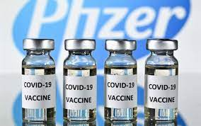
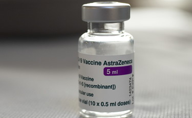
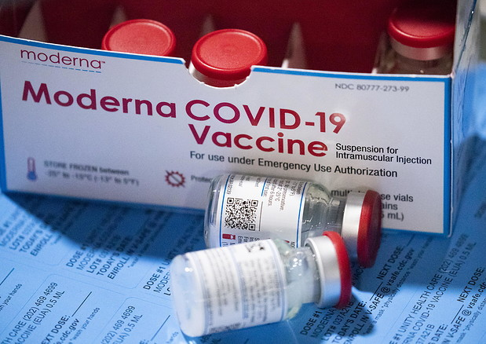
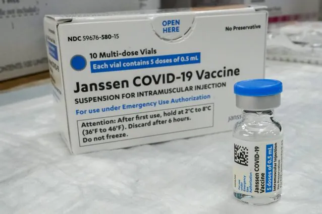

Nome del Vaccino |
Immagine del vaccino |
descrizione del vaccino |
|---|---|---|
Vaccino Pfizer |
 | Il vaccino COVID-19 mRNA BNT162b2 (Comirnaty), noto come Pfizer-BioNTech,è il primo vaccino disponibile in Italia per prevenire COVID-19, la malattia causata dal virus SARS-CoV-2, nei soggetti a partire dai 16 anni di età. |
Vaccino Astrazenica |
 | In Italia è iniziata la somministrazione del vaccino COVID-19 Vaccine AstraZeneca; si tratta del terzo vaccino arrivato nel nostro Paese per prevenire la malattia COVID-19, causata dall’infezione del virus SARS-CoV-2.Anche questo vaccino, come i precedenti Pfizer BioNTech e Moderna, è stato autorizzato da EMA (European Medicines Agency – Agenzia Europea per i Medicinali) e da AIFA (Agenzia Italiana del Farmaco) ed è indicato nelle persone a partire dai 18 anni di età. |
Vaccino Moderna |
 | Il vaccino COVID-19 Vaccine Moderna mRNA -1273 è il secondo vaccino arrivato in Italia per prevenire la malattia COVID-19, causata dall’infezione del virus SARS-CoV-2. È stato autorizzato da EMA (European Medicines Agency – Agenzia Europea per i Medicinali) e da AIFA (Agenzia Italiana del Farmaco) ed è indicato nelle persone a partire dai 18 anni di età. |
Vaccino Jhonson & Jhonson |
 | "COVID-19 Vaccine Janssen è un vaccino usato per prevenire la malattia da coronavirus 2019 (COVID-19) nelle persone di età pari o superiore a 18 anni. Il vaccino induce il sistema immunitario a produrre anticorpi e globuli bianchi specializzati che agiscono contro il virus, offrendo protezione contro la malattia. |